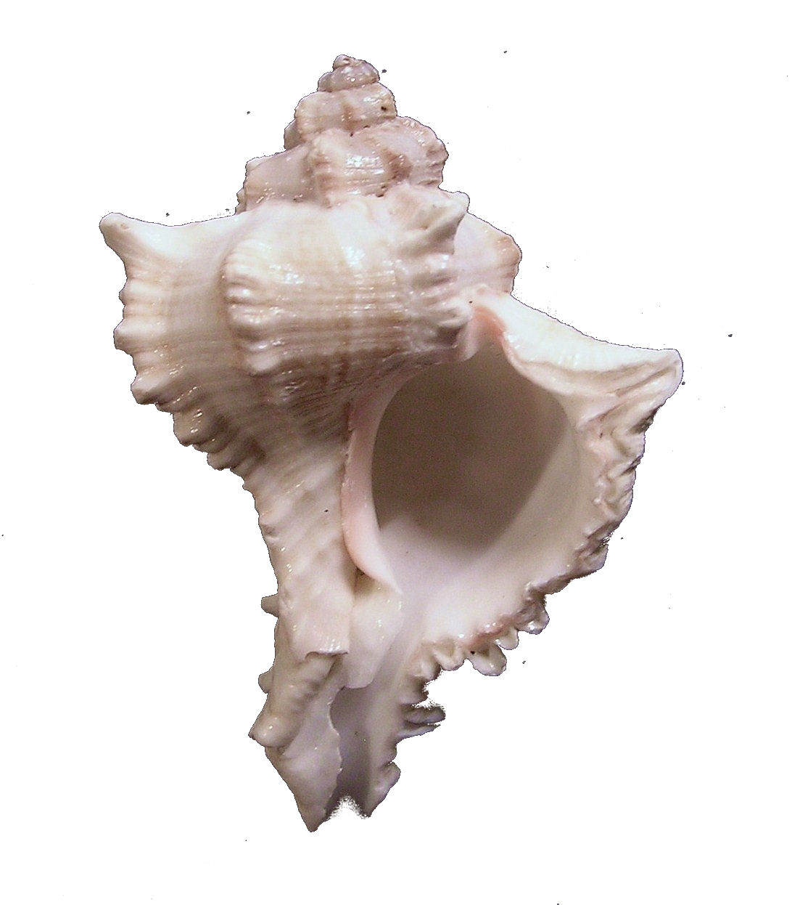

×
Chicoreus virgineus (Röding, 1798)
Virgin Murex
Neogastropoda
Muricidae
Not Evaluated
It is dextrally coiled. It has a body length of 58mm.
Marine. Benthic. It exhibits mucus mediated gliding. It resides in Bay areas.
Not Available
Occurs from Red Sea to Bay of Bengal.